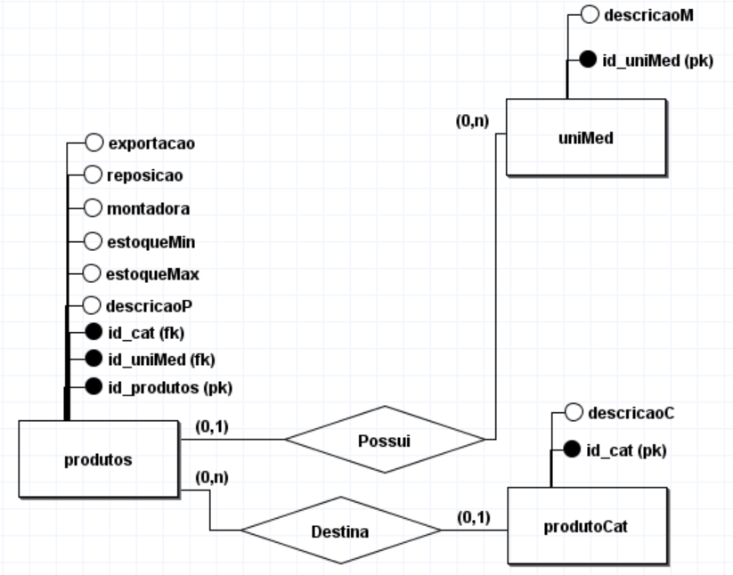

DER - Diagrama Entidade Relacionamento
Essa página complementa a página "MER" é recomendado ver ela, e depois ler o conteúdo desta.
Como ja dito anteriormente, na criação de projeto novo ou adição de funcionalidades, é importante o levantamento de requisitos
para entendermos o que se deseja fazer com o projeto ou em qual parte do site a função será programada. Caso seja necessário criar
um Banco de Dados, ou mesmo fazer alguma modificação em um Banco de Dados já existente. É importante ter uma noção de como será/é
a estrutura dele.
Já conseguimos entender que o MER, serve justamente pra isso, porém existe uma versão mais técnica e mais dinâmica dele. Que é
justamente o DER (Digrama de Entidade Relacionamento). Onde as Entidades, Atributos e Relações são mostrados de uma forma muito
mais contrastante e é possivel entender grandes diagramas de forma bem mais facil. Sem contar no fato de que é possivel detalhar
melhor o que cada atributo é, definindo como primary key ou foreign key por exemplo.

Acima temos um exempplo de um DER. Podemos ver claramente a diferença entre as Relações (losângulos), Entidade e Atributos. Podemos
ver também a relação de cardinalidade entre as tabelas e os atributos que são normais, pk ou fk.
Esse diagrama é voltado para ambientes mais técnicos e é extremamente mais fácil organizar suas ideias em um DER, para depois
criar um Banco de Dados baseado nesse mesmo DER.
Páginas Relacionadas: MER